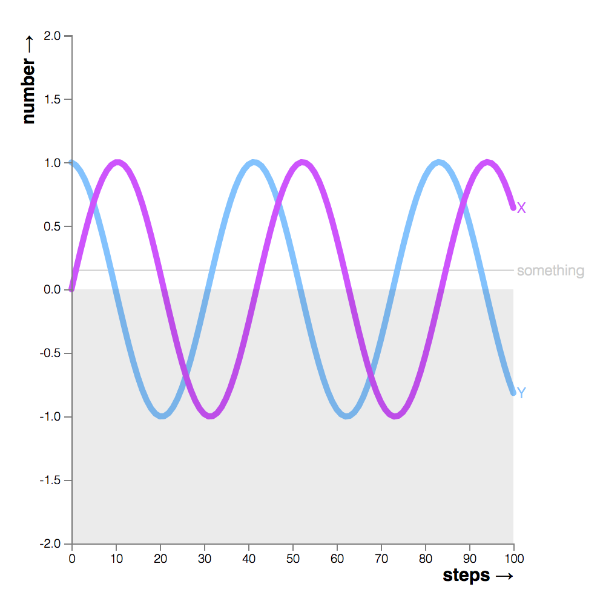
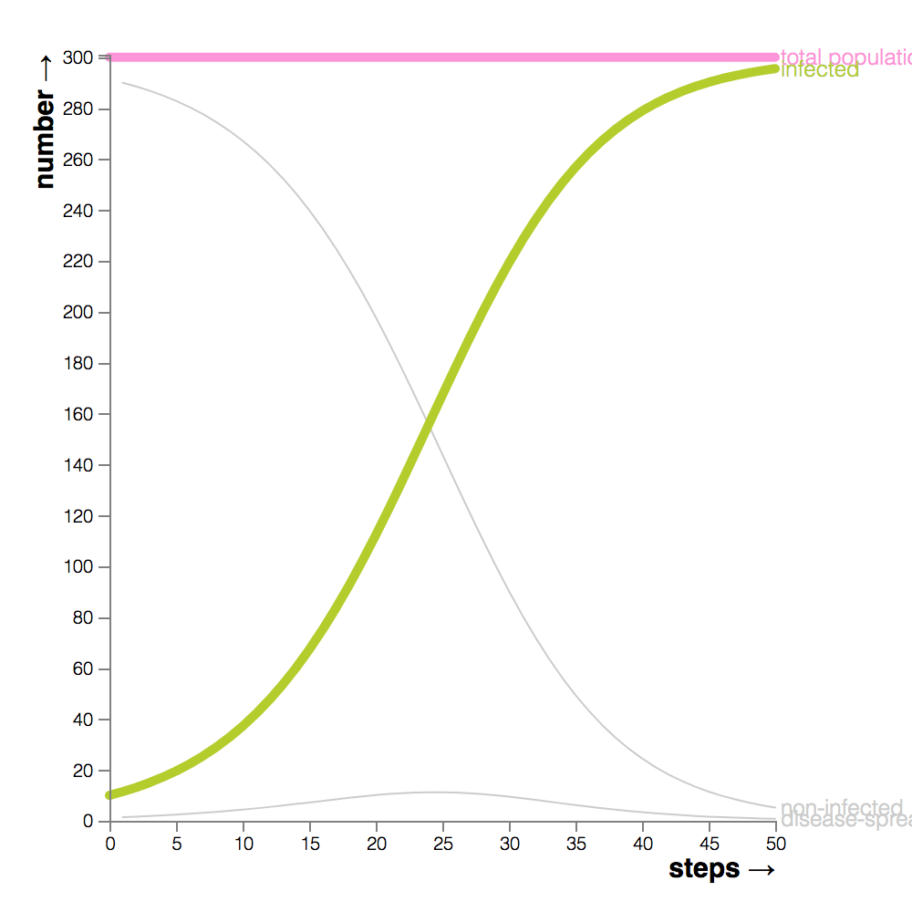
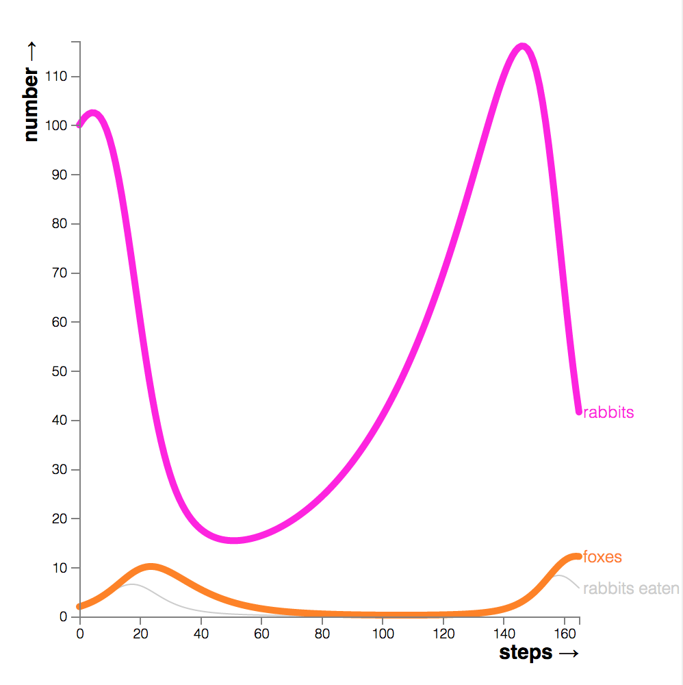
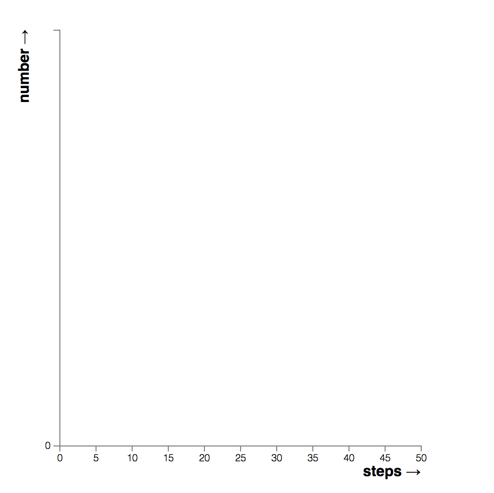

<!doctype>
<html>
<head>
	<title>The Joy of Nonlinear Dynamics</title>
	<link rel="stylesheet" href="../demo.css">
	<link rel="stylesheet" href="../../dist/joy.css">
</head>
<body>
	<div id="content">
		<div id="container">
			<div id="player"></div>
			<div id="editor"></div>
		</div>
		<div id="footer">
			<div id="more-shtuff">
			<span style="font-size:1.9em;">more nonlinear models &rarr;</span>
			<br>
			// demos &amp; homepage
			</div>
			<div id="demos">
				<a href="?model=waves">
					
					<span>waves</span>
				</a>
				<a href="?model=spring">
					
					<span>spring</span>
				</a>
				<a href="?model=disease">
					
					<span>disease</span>
				</a>
				<a href="?model=prey">
					
					<span>prey</span>
				</a>
				<a href="?">
					
					<span>blank</span>
				</a>
			</div>
		</div>
	</div>
</body>
</html>

<script src="../../dist/joy.js"></script>

<!-- load the d3.js library -->    
<style> /* set the CSS */
#player{
	font-size: 12px;
}
#editor{
	font-size: 18px;
	line-height: 1.7em;
}

g.line{}
g.line > path{ 
    stroke: #000;
    stroke-width: 5;
    fill: none;
    stroke-linecap: round;
    stroke-linejoin: round;
}
g.line > path.small{
	stroke: #ccc;
	stroke-width: 1;
}
g.line > text{
	stroke: none;
	fill: #ccc;
}
text.axis-label{
	font-size: 15px;
	font-weight: bold;
}
rect.zero{
	fill: rgba(0,0,0,0.08);
}

.axis path,
.axis line {
    fill: none;
    stroke: grey;
    stroke-width: 1;
    shape-rendering: crispEdges;
}
</style>
<script src="d3.v4.min.js"></script>
<script src="nonlinear-demo.js"></script>